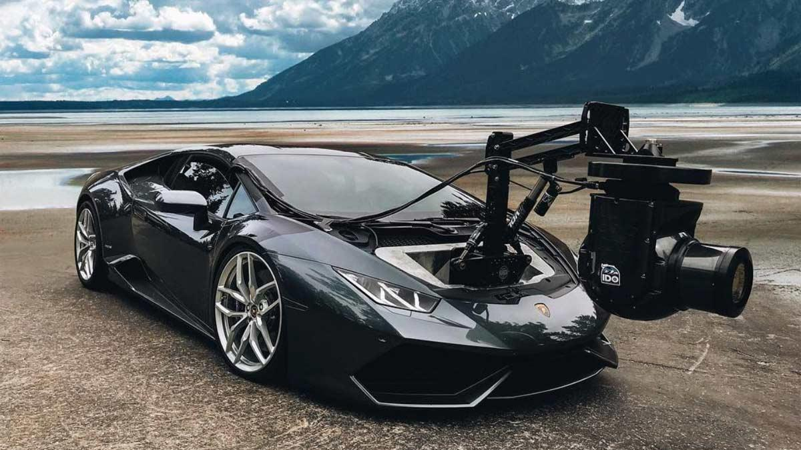

¿Necesitas grabar un vídeo a 300 km/h? Esta es tu opción ganadora

Este Lamborghini Huracán con cámara será lo más loco que verás hoy, bueno, con permiso del Peugeot 205 GTi blindado de Bernard Arnault. Sin duda, el mundo del cine necesita recursos para cubrir todo tipo de necesidades, desde un todoterreno robusto para llegar a cualquier lugar hasta un deportivo para poder grabar…¡claro! A otros deportivos. A toda velocidad.
Hasta la fecha, el coche cámara más rápido que habíamos visto era un Ferrari 458 Italia con cámara utilizado para grabar en la película ‘Need for Speed’, muy apropiado. No obstante, hoy hemos conocido uno todavía más rápido: un Lamborghini Huracán con cámara que acaba de presentar la empresa americana Incline Dynamic Outlet. ¡Sí, es una auténtica pasada!
El Lamborghini HuraCam monta una espectacular cámara giroestabilizada en su maletero, sí, sobre el eje delantero. Como puedes imaginar viendo el tamaño de la cámara, la cosa es algo más compleja que cuando pones una Go Pro sobre el capó para grabarte subiendo un puerto de montaña con tu coche nuevo. Se ha realizado una profunda reforma para poder instalar la enorme cámara con su correspondiente brazo, así como todos los elementos técnicos para poder controlarla.
Lamentablemente, la compañía no ha ofrecido detalles sobre las modificaciones técnicas que ha sufrido el coche, tampoco sobre el peso extra que ha sido añadido en el eje delantero: seguro que será uno de los peores Lamborghini a nivel de dinamismo. No obstante, ¿a quién le importa eso? Te recuerdo que el Lamborghini Huracán es capaz de alcanzar los 323 km/h, por lo que aunque pierda algo de velocidad, seguirá siendo insultantemente rápido.
¿Quieres grabar a un Bugatti Chiron? ¿O el despegue de un avión? ¿O cualquier cosa rápida? Aquí tienes tu mejor aliado. Ahora bien, lo que está claro es que después de ver que han gastado medio millón de dólares en su creación, no vayas a esperar que alquilar esta bestia te vaya a salir bien de precio.
19 Abr 2018 20:25